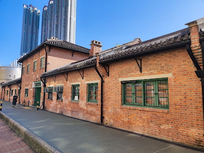
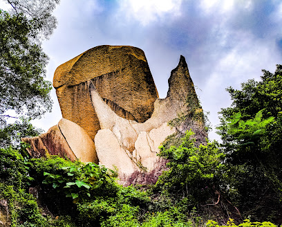
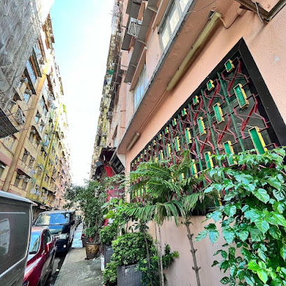
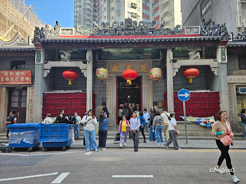
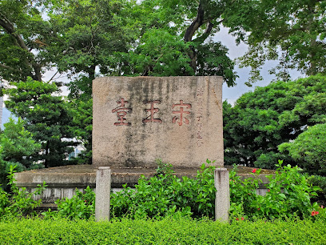
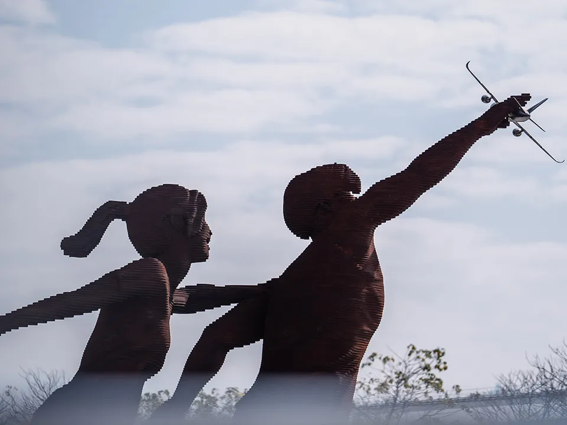
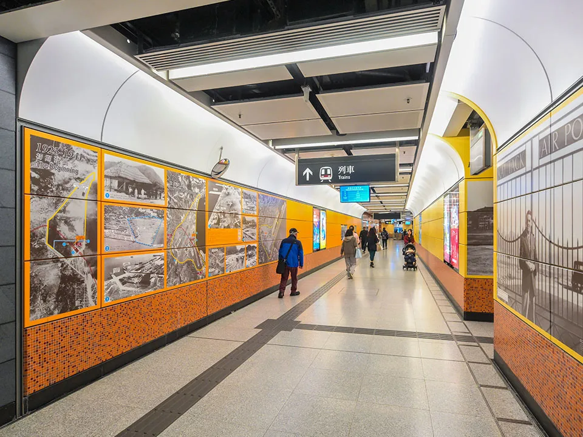
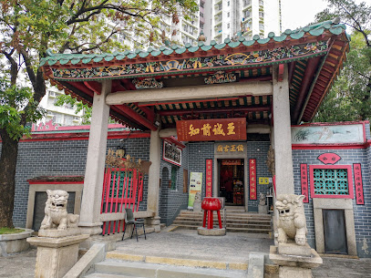
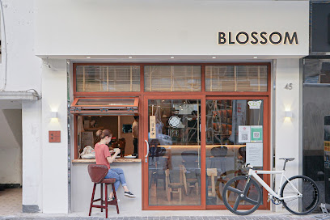
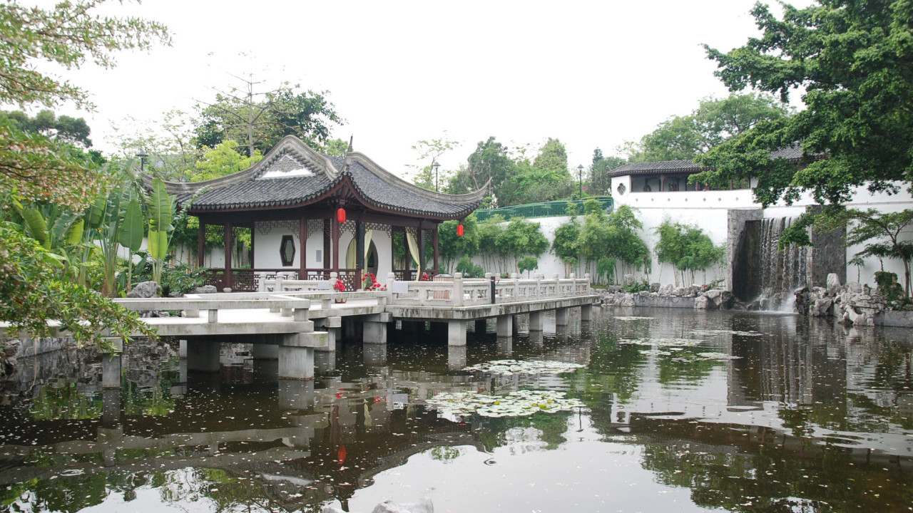

Kowloon: Beyond the myth:The Walled City of Kowloon
Introduction
About this WebsiteTravel Guide
Kowloon Walled City Park Kowloon Walled City Exhibition Nearby Food Spots(1) Nearby Food Spots(2) Kowloon City attractions Derivative Artworksothers
Contact Us
Kowloon City attractions
Table of contents
Cattle Depot Artist Village
The 6,000 m² Cattle Depot Artist Village and Art Park is a cultural space converted from an old slaughterhouse. The site was originally the Ma Tau Kok Quarantine Depot for livestock built in 1908 and is a Grade II historic building. The village offers short-term rental units and outdoor spaces for artists and groups, hosting exhibitions, theatre and workshops. Resident artists have included performance artist Wong King (Frog King) Kwok Mang-ho, avant-garde video collective Videotage, contemporary gallery 1a Space, and local theatre group Zuni Icosahedron. Architectural highlights and photo spots include red-tiled roofs, concrete cattle drinking troughs, iron rings for tethering cattle, and preserved slaughterhouse relics in the art park. It’s a peaceful place for a leisurely walk.
| Address | 63 Ma Tau Kok Road, To Kwa Wan, Kowloon | |
| Opening hours | Cattle Depot Artist Village 10:00–22:00 Cattle Depot Art Park 06:30–22:00 | |
| How to get there | MTR To Kwa Wan Station Exit A, about 10 minutes’ walk |
Haixin Park Fish Tail Rock

Fish Tail Rock sits in Haixin Park by the To Kwa Wan waterfront. The site was originally Haixin Island and once housed a Dragon Mother altar; after 1960s reclamation the altar was removed and the statue moved to the Tin Hau Temple in To Kwa Wan. Fish Tail Rock and the nearby Haixin Rock are popular couple photo spots for wishing for good relationships. A 2023 expansion added a seaside promenade, fitness area, children’s cycling track and a pirate-themed playground. Haixin Park is now the district’s second-largest recreational space, larger than Kowloon Walled City Park, with lawns, a seaside pavilion and sports facilities—ideal for weekend relaxation, exercise and family outings.
| Address | Zhejiang Street, To Kwa Wan | |
| Opening hours | 05:30–23:30 | |
| How to get there | MTR To Kwa Wan Station Exit D2, about 9 minutes’ walk |
Ma Tau Kok Thirteen Streets

Commonly called To Kwa Wan Thirteen Streets, Ma Tau Kok Thirteen Streets is a cluster of tong lau (tenement) buildings formed by 13 streets. Most streets are named after animals—Dragon, Phoenix, Deer, Qilin, etc. The buildings date from before 1959 and were converted from the former Nanyang Spinning Mill into old-style tong lau. Their colourful facades make great photo backdrops. The area has many vehicle repair shops, which have been a factor in resisting redevelopment.
| Address | Muk Cheong Street area, Ma Tau Kok (main outer road to the north of the Thirteen Streets) |
| How to get there | MTR To Kwa Wan Station Exit A, about 11 minutes’ walk |
Hung Hom Kwun Yum Temple

Built in 1873, Hung Hom Kwun Yum Temple is the largest Kwun Yum (Guanyin) temple in Kowloon and is a Grade I historic building. The temple features elegant traditional architecture, a double-pitched tiled roof and exquisite ceramic decorations. During Guanyin’s birthday and the lunar New Year’s 26th day “Guanyin Opens the Treasury,” the temple is crowded with worshippers. The temple survived World War II bombings intact and is highly respected by the local community.
| Address | Cha Kwan Road, Hung Hom, Kowloon (Cha Kwan Lane area) | |
| Opening hours | 08:00–17:45 | |
| How to get there | MTR: Ho Man Tin Station — Exit B1, then cross the footbridge and walk ~10 minutes.
bus: alight at Wuhu Street / Kwun Yum Street stops and walk ~5 minutes |
Song Wong Toi

In the 13th century, Southern Song emperors Zhao Shi and his brother Zhao Bing fled Mongol invasion and stayed on the hill in Kowloon City. Legend says Emperor Zhao Shi named the area “Kowloon” here. Six months after arriving, both emperors died while being pursued by Yuan forces. To commemorate their stay, people carved the characters “Song Wong Toi” on a large rock on the hill. The hill later became part of Kai Tak Airport and the stone tablet was moved to today’s Song Wong Toi Garden.
| Address | Junction of Sung Wong Toi Road and Ma Tau Chung Road, Kowloon City | |
| Opening hours | 7:00–23:00 | |
| How to get there | MTR Sung Wong Toi Station — Exit B3, walk ~1–2 minutes. |
MTR Song Wong Toi Station Archaeological Exhibition

Song Wong Toi was a notable historical site. The Antiquities and Monuments Office curated the exhibition “Remnants of the Sacred Hill” in the concourse of MTR Song Wong Toi Station, displaying over 500 artefacts unearthed during station construction. The finds—mainly Song and Yuan dynasty ceramics—illustrate Hong Kong’s history in that era and local life around Song Wong Toi, including Longquan celadon, qingbai and light-blue glazed wares, scholar’s desk items, architectural fragments, copper coins, censers and inscribed ceramics.
| Address | Concourse of MTR Song Wong Toi Station | |
| Opening hours | Same as station opening hours | |
| How to get there | Enter MTR Sung Wong Toi Station |
13/31 Plaza

Named after the old Kai Tak Airport runway 13/31, the plaza is just minutes from MTR Song Wong Toi Station. Australian artist Russell Anderson created the large sculpture “Landing” for Kai Tak Sports Park, inspired by the dramatic 47-degree manual turns pilots once made when landing at Kai Tak. Because the airport was so close to residential areas, aircraft passed very near people and pedestrians during final approach.
| Address | Kai Tak Sports Park, 38 Shing Kai Road, Kai Tak, Kowloon | |
| Opening hours | 07:00–23:00 | |
| How to get there | From Sung Wong Toi Station — Exit B3, walk ~10–12 minutes.
Kai Tak Station — Exit A, walk ~4–6 minutes. |
Kai Tak Memories 1925–1998

Kai Tak Station currently displays a photo exhibition of Kai Tak Airport from 1925 to 1998, recalling its golden years. The station area sits on the former Kai Tak site, the birthplace of Hong Kong’s aviation industry. As the city developed, many historical traces were lost; the exhibition’s archival photos let visitors revisit the airport’s aircraft, people and achievements. Kai Tak’s legendary story remains an important collective memory for many residents.
| Address | Kai Tak Station | |
| Opening hours | Same as station opening hours | |
| How to get there | MTR Kai Tak Station, exit to the station precinct |
Hau Wong Temple

Hidden in Kowloon City, Hau Wong Temple is believed to have been built around 1730. It is the only temple in Kowloon dedicated primarily to Hau Wong, though it also houses Guanyin and other deities. The temple was popular with Qing dynasty officials and soldiers stationed locally in the late 19th century and still preserves rich historical artefacts, including Shiwan ceramics, Chinese calligraphy and an incense burner donated by Kowloon’s first district magistrate. Besides the main hall, the temple has side chambers, pavilions, a garden and stone inscriptions. A notable feature is the square pavilion in front of the temple with a xieshan roof supported by finely carved granite columns. The building underwent three major restorations during the Qing era and was declared a monument in 2014.
| Address | 130 United Court Road, Pak Hok Shan, Kowloon City | |
| Opening hours | 08:00–17:00 | |
| How to get there | MTR Sung Wong Toi Station — Exit B3, walk ~8–10 minutes/ |
Related content


